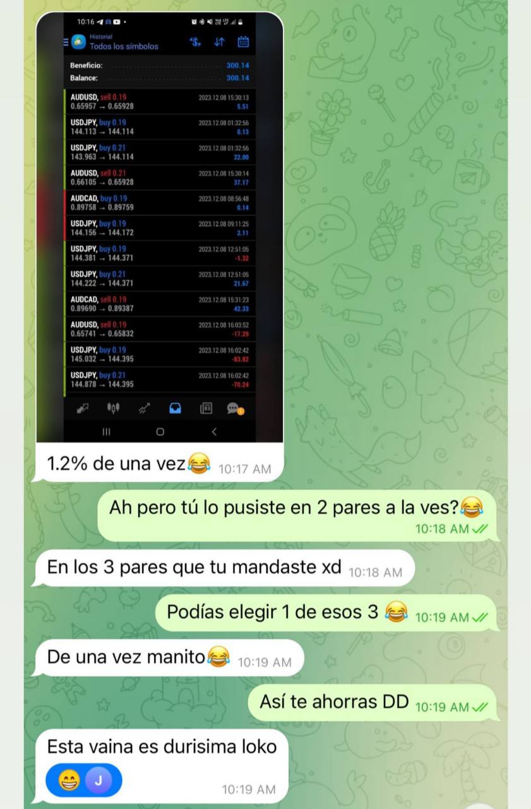

EA para tus operaciones
exitosas
Un sistema algorítmico para traders novatos y experimentados nuestro ALGORITMO/EA tiene la capacidad suficiente para generarte ingresos pasivos en automático
Productos


Observaciones
Experiencias de nuestros clientes
Resultados 100% reales sin atajos, con más de de 5 meses de trackrecord en broker
prestigioso . Nuestros sistemas te permiten obtener resultados asombrosos y
sostenibles en el tiempo.
prestigioso . Nuestros sistemas te permiten obtener resultados asombrosos y
sostenibles en el tiempo.

Preguntas Frecuentes
¿Puedo utilizarlo para cuentas de fondeo?
Si, para cuentas de fondeo tenemos un Preset/Configuracion que se le proporciona al momento de adquirirlo.
¿Necesito tener mi computadora encendida?
No, ya que usted tendrá el EA/Algoritmo en un VPS.
¿Qué riesgo tengo?
El riesgo es medido ya que hicimos suficientes prácticas para minimizarlo
¿Que % de rentabilidad genera?
Tenemos varios Presets/Configuraciones para los distintos riesgo pero va desde un 1% a 10% mensual.
Invest Academy
Enseñando lo que realmente funciona.
Proporcionando productos con mucha calidad.
Nuestra innovación en educación y tecnología
Proporcionando productos con mucha calidad.
Nuestra innovación en educación y tecnología
Descargo de Responsabilidad
Al usar nuestro software, usted asume todos los riesgos del comercio. No hay garantías en el comercio y nuestros resultados pasados no garantizan resultados futuros. No tenemos ninguna responsabilidad por las pérdidas. Usted es totalmente responsable de sus propias cuentas y de las pruebas en una cuenta de demostración antes de usar una cuenta real con dinero real. No intercambie dinero que no pueda permitirse perder. No utilice este software para administrar cuentas que no sean de su propiedad. Cada recomendación dada es simplemente una recomendación. Lo instamos a que practique una gestión de riesgos adecuada y haga su propia diligencia debida en lugar de seguir ciegamente las recomendaciones. Los instructivos proporcionados están destinados a educar a los miembros sobre cómo configurar el software. Los ajustes que usted ingresa manualmente quedan a su discreción. Asegúrese de realizar sus propias pruebas en una cuenta de demostración y ajuste su configuración en consecuencia.
Términos de Uso
Debe de darle el uso correcto a nuestro sistema, el uso que nosotros le enseñaremos sino perderá la garantía del producto ya que usted todo acciones que nosotros no hemos indicado.

all rights reserved © 2024